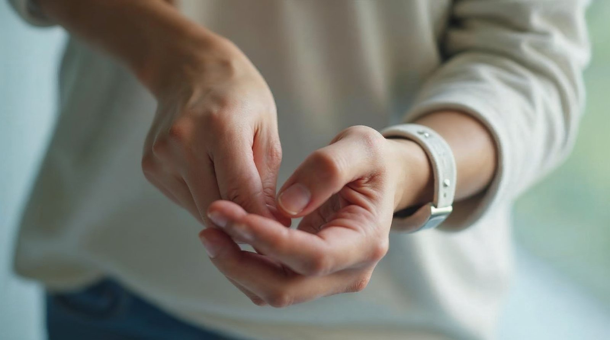
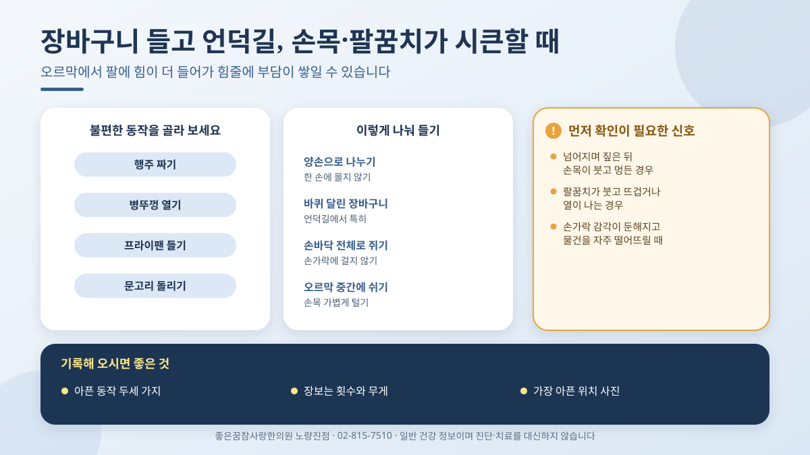

이종호 한의사 감수좋은꿈참사랑한의원 대표원장 (한의사 면허번호 19769)발행 2026-11-24 · 수정 2026-11-26
이 글의 차례
- 왜 이런 불편이 생길 수 있나요
- 왜 팔꿈치 바깥쪽이 먼저 시큰해질까요
- 먼저 이렇게 여쭙니다
- 일상에서 먼저 해 볼 수 있는 것
- 상황별 예시
- 스스로 점검해 보세요
- 비슷한 불편과 어떻게 구분하나요?
- 장 보는 날, 이렇게 순서를 바꿔 보세요
- 한의원에서 함께 살필 수 있는 경우
- 손목과 팔꿈치에 맞는 가벼운 동작은 어떻게 하나요?
- 집안일과 일터에서 함께 바꿔 볼 것
- 진료를 받는 동안에는 어떻게 지내면 좋을까요?
- 추운 날에는 무엇을 더 챙기나요?
- 얼마나 지켜보고 언제 상담할까요
- 이렇게 기록해 오시면 상담이 쉬워집니다
- 다시 시큰해지지 않으려면 무엇을 챙길까요?
- 이런 증상은 먼저 확인이 필요합니다
- 관련 글
장바구니를 들고 언덕을 오른 뒤 손목과 팔꿈치가 시큰하다면, 손가락에 봉지를 걸어 한 손으로 버티는 습관과 한 번에 드는 무게를 먼저 바꿔 보는 것이 좋습니다. 상도동처럼 오르막이 긴 동네에서는 쥐는 힘을 오래 쓰다 보니 행주를 짜거나 문고리를 돌릴 때 팔꿈치 바깥쪽이 시큰하다는 분이 많습니다.
쥐고 버티는 시간이 줄면 시큰함도 덜해질 수 있지만, 2~3주 넘게 같은 동작에서 아프거나 컵을 들 때도 시큰하다면 아픈 동작을 기준으로 한 번 살펴보시는 것이 좋습니다.
왜 이런 불편이 생길 수 있나요
- 물건을 꽉 쥐고 버틸 때는 손목이 꺾이지 않도록 받쳐 주는 근육이 함께 일하는데, 이 근육들이 팔꿈치 바깥쪽에 붙어 있어 봉지를 손가락에 걸고 오래 버티면 그 자리에 부담이 쌓입니다.
- 오르막에서는 몸을 앞으로 기울이며 팔에 힘을 더 주게 되고, 중간에 쉬지 않고 한 번에 오르면 쥐는 시간도 그만큼 길어집니다.
- 장보기 다음 날 행주 짜기, 프라이팬 들기처럼 쥐고 비트는 동작이 이어지면 쉴 틈이 없습니다.
- 손목을 꺾은 채 무게를 들면 손목 엄지 쪽에도 통증이 생길 수 있습니다.
- 추운 날 장갑 없이 언 손으로 봉지를 쥐면 손가락과 손목에 힘이 더 들어가기 쉽습니다.
왜 팔꿈치 바깥쪽이 먼저 시큰해질까요
손목을 뒤로 젖히고 버티는 근육은 대부분 팔꿈치 바깥쪽 뼈 근처에서 시작합니다. 그래서 무언가를 쥐고 버티는 시간이 길수록, 정작 손이 아니라 팔꿈치 바깥쪽에 당기는 힘이 반복해서 걸립니다.
봉지 손잡이가 가늘수록 손가락 끝으로 꽉 쥐게 되고, 그만큼 손목을 받치는 근육도 더 세게 일합니다. 같은 무게라도 손잡이 모양에 따라 팔이 느끼는 부담이 달라지는 까닭입니다.
힘줄은 근육보다 회복이 느린 편이라, 하루 이틀 쉬면 덜하다가 다시 장을 보면 금세 시큰해지는 흐름이 되풀이되기 쉽습니다. 그래서 쉬는 것만큼 쥐는 방법을 바꾸는 일이 중요합니다.
먼저 이렇게 여쭙니다
- 장바구니를 주로 어느 손으로, 손가락에 걸어서 드시나요?
- 시큰한 곳이 팔꿈치 바깥쪽인가요, 안쪽인가요, 손목인가요?
- 행주 짜기, 병뚜껑 열기, 프라이팬 들기 중 어떤 동작이 불편한가요?
- 장 보는 날 다음 날 아침에 더 뻣뻣한가요?
- 언제부터, 얼마나 자주 아팠나요?
- 손가락이 저리거나 밤에 손이 저려 깬 적이 있나요?
- 최근 김장이나 이사처럼 손을 많이 쓴 일이 있었나요?
- 다시 오신 분께는 지난번 이후 장보기 방법을 바꿔 보셨는지부터 이어서 여쭙니다.

일상에서 먼저 해 볼 수 있는 것
- 한 손에 몰지 말고 양손으로 무게를 나누거나 바퀴 달린 장바구니 쓰기
- 손가락에 봉지를 걸지 말고 손바닥 전체로 손잡이 쥐기, 손잡이가 가늘면 수건을 감아 두껍게 쥐기
- 들 때는 팔꿈치를 몸 옆에 붙이고 손목을 곧게 펴서 꺾이지 않게 하기
- 오르막 중간에 한 번 내려놓고 손목을 가볍게 털어 주기
- 장 보는 양을 두 번에 나누고, 물이나 쌀처럼 무거운 것은 배달을 이용해 보기
- 추운 날에는 장갑을 끼고 손을 데운 뒤 들기
- 아픈 동안은 행주를 비틀어 짜기보다 손바닥으로 눌러 물기 빼기
상황별 예시
- 예를 들어 퇴근길에 장을 보고 언덕을 올라 집에 가는 직장인의 경우, 하루 종일 마우스를 쥔 손으로 다시 무거운 봉지를 들게 되어 저녁마다 팔꿈치 바깥쪽이 시큰할 수 있습니다. 장보기를 주말과 평일 한 번씩으로 나누고, 회사에서는 한 시간에 한 번 손목을 쉬게 하는 것부터 해 볼 수 있습니다.
- 예를 들어 무릎이 불편해 지팡이를 짚고 언덕을 오르는 어르신의 경우, 남은 한 손으로만 장바구니를 들게 되어 한쪽 손목에 부담이 몰리기 쉽습니다. 바퀴 달린 장바구니를 쓰거나 가족과 장보는 날을 맞추는 방법을 함께 이야기해 봅니다.
- 예를 들어 한쪽 팔로 아이를 안고 다른 손에 장바구니를 드는 부모의 경우, 손목과 팔꿈치뿐 아니라 어깨와 허리까지 한쪽으로 기울기 쉬워 안는 쪽과 드는 쪽을 번갈아 바꾸는 요령을 먼저 살펴봅니다.

스스로 점검해 보세요
- 장바구니를 늘 같은 손, 손가락에 걸어 든다
- 행주를 짜거나 병뚜껑을 열 때 팔꿈치 바깥쪽이 시큰하다
- 장 본 다음 날 아침에 손목이나 팔꿈치가 더 뻣뻣하다
- 컵이나 주전자를 들 때도 아픈 날이 늘었다
- 팔꿈치 바깥쪽 뼈 근처를 누르면 콕 집어 아픈 자리가 있다
- 손가락이 저리거나 힘이 빠져 물건을 놓친 적이 있다
앞의 다섯 가지는 드는 방법과 무게부터 바꿔 볼 신호입니다. 마지막 항목은 힘줄보다 신경 쪽 문제일 수 있어 진료 때 먼저 말씀해 주세요.
비슷한 불편과 어떻게 구분하나요?
팔꿈치와 손목 주변 통증이라도 아픈 위치와 아픈 동작에 따라 살피는 방향이 달라집니다. 진료실에서 자주 나눠 보는 경우는 이렇습니다.
- 팔꿈치 바깥쪽 뼈 근처를 누르면 아프고 손목을 젖히며 쥘 때 시큰하다면, 손목을 펴는 근육의 힘줄 쪽 부담을 먼저 생각합니다.
- 팔꿈치 안쪽이 아프고 손목을 구부리거나 무언가를 당길 때 불편하다면, 손목을 굽히는 근육 쪽을 살핍니다.
- 엄지 쪽 손목이 아프고 엄지를 감싸 쥔 채 손목을 새끼손가락 쪽으로 꺾을 때 아프다면, 엄지 힘줄 쪽을 함께 봅니다.
- 손가락이 저리고 밤에 손이 저려 깬다면 손목을 지나는 신경 쪽을, 고개를 돌릴 때 팔까지 저림이 내려간다면 목 쪽을 함께 확인합니다.
스스로 정확히 나누기는 어렵습니다. 아픈 자리를 손가락 하나로 짚을 수 있는지, 어떤 동작에서 시큰한지만 기억해 오셔도 진료가 한결 수월해집니다.
장 보는 날, 이렇게 순서를 바꿔 보세요
장보기 자체를 줄이기 어렵다면 하루 흐름 안에서 순서를 바꾸는 것만으로도 팔이 쉬는 시간을 만들 수 있습니다.
- 집을 나서기 전, 아래에 적은 가벼운 손목 동작으로 손을 먼저 데웁니다.
- 무거운 물건은 장바구니 바닥에, 가벼운 것은 위에 담아 무게가 한쪽으로 쏠리지 않게 합니다.
- 봉지가 두 개라면 양손에 나눠 들고, 하나라면 언덕 중간마다 드는 손을 바꿉니다.
- 집에 도착하면 바로 정리를 시작하기보다 5분쯤 손을 쉬게 한 뒤 움직입니다.
- 그날 저녁에는 행주 짜기, 무거운 냄비 들기처럼 쥐고 비트는 일을 줄이거나 가족과 나눕니다.

한의원에서 함께 살필 수 있는 경우
- 손목과 팔꿈치 통증이 장보기나 집안일 때마다 반복되는 경우 불편한 동작과 아픈 지점을 함께 살핍니다.
- 어깨와 목까지 뻐근함이 이어지는 경우 팔 전체의 긴장을 함께 살핍니다.
- 손이 차거나 저린 느낌이 함께 있는 경우 손의 순환과 잠의 리듬도 이어서 여쭙니다.
좋은꿈참사랑한의원에서는 첫 방문 때 맥부터 짚으면서 장보기와 집안일에서 아픈 동작, 시작된 시기와 아픈 위치를 여쭙습니다. 그 뒤 손목을 젖히거나 주먹을 쥘 때 어디가 아픈지, 누르면 아픈 자리가 어디인지 확인하고, 필요하다고 판단될 때 초음파로 팔꿈치와 손목의 힘줄 주변을 살핍니다.
상태에 맞춰 침·약침·온열 등을 정하고, 오래 이어진 힘줄 주변 통증이라면 체외충격파를 쓸지도 진찰 후 판단합니다. 귀가 전에는 쥐는 방법과 짐을 나누는 요령, 다음 방문 때 다시 확인할 동작을 정해 드립니다.
손목과 팔꿈치에 맞는 가벼운 동작은 어떻게 하나요?
아픈 동안에는 힘을 기르는 운동보다 굳지 않게 움직여 주는 정도가 좋습니다. 팔을 책상 위에 편하게 올리고 손목을 천천히 위아래로, 좌우로 다섯 번씩 움직여 보세요.
주먹을 가볍게 쥐었다가 손가락을 활짝 펴는 동작을 열 번쯤 하면 손이 데워지는 느낌이 듭니다. 세게 쥘 필요는 없고, 시큰함이 올라오기 전에서 멈추는 것이 기준입니다.
붓거나 열감이 없다면 따뜻한 물에 손을 담그고 천천히 손가락을 움직이는 것도 좋습니다. 동작을 한 다음 날 아침 더 뻣뻣하다면 양을 줄이고 진료 때 말씀해 주세요. 손목이나 팔꿈치를 수술했거나 골절 치료를 받은 뒤라면 담당 병원에서 허락한 범위 안에서 해 주세요.
집안일과 일터에서 함께 바꿔 볼 것
장보기만 바꿔도 부담이 줄 수 있지만, 하루 중 쥐고 비트는 동작은 장보기 말고도 많습니다. 설거지, 걸레질, 프라이팬 들기, 마우스와 휴대폰 쥐기까지 손을 쓰는 일을 한번 떠올려 보세요.
프라이팬이나 냄비는 한 손보다 양손으로 들고, 무거운 국 냄비는 통째로 옮기기보다 국자로 덜어 옮겨 보세요. 병뚜껑은 고무장갑이나 병따개를 쓰면 손목을 덜 비틀 수 있습니다.
일터에서 마우스를 오래 쓴다면 손목이 꺾이지 않도록 받침을 두고, 한 시간에 한 번은 손을 내려놓고 쉬어 주세요.
진료를 받는 동안에는 어떻게 지내면 좋을까요?
진료를 받는 동안에도 장보기와 집안일은 이어지기 때문에, 진료실에서 정한 쥐는 방법을 집에서 얼마나 지켰는지가 중요합니다. 지키기 어려웠던 부분이 있으면 그대로 말씀해 주세요. 그에 맞춰 방법을 다시 고릅니다.
통증이 줄었다고 갑자기 무거운 장을 몰아서 보기보다, 조금씩 무게를 늘려 가며 팔의 반응을 지켜보는 편이 좋습니다.
추운 날에는 무엇을 더 챙기나요?
날이 추우면 손과 팔의 근육이 덜 풀린 채 무거운 것을 들게 됩니다. 장갑은 장 볼 때만이 아니라 집안일에서도 챙겨 주세요.
찬물로 설거지나 손빨래를 오래 하면 손목과 팔꿈치가 더 뻣뻣해질 수 있습니다. 고무장갑 안에 면장갑을 끼거나 미지근한 물을 쓰는 것도 방법입니다.
손이 차고 저린 느낌이 겨울마다 심해진다면 진료 때 함께 말씀해 주세요.
얼마나 지켜보고 언제 상담할까요
- 드는 방법과 무게를 바꾼 뒤 1~2주는 아픈 동작이 어떻게 달라지는지 지켜보세요.
- 2~3주가 지나도 행주 짜기나 병뚜껑 열기처럼 같은 동작에서 계속 시큰하다면 상담을 권합니다.
- 장을 보지 않은 날에도 아프거나 가만히 쉴 때도 욱신거린다면 더 기다리지 말고 상담해 보세요.

이렇게 기록해 오시면 상담이 쉬워집니다
- 아픈 동작 두세 가지(행주 짜기, 병뚜껑 열기 등)
- 장보는 횟수와 대략의 무게, 언덕을 오르는 데 걸리는 시간
- 가장 아픈 위치(손가락으로 짚어 사진을 찍어 오셔도 됩니다)
- 아픈 동작을 휴대폰 영상으로 짧게 찍어 둔 것
- 드시는 진통제와 복용 횟수, 붙이는 파스
기록은 길지 않아도 됩니다. 예를 들어 '20일, 장바구니 2개, 오른손, 언덕 10분, 다음 날 아침 행주 짤 때 6점'처럼 한 줄이면 드는 방법을 바꾼 뒤 달라지는 흐름이 잘 보입니다.
다시 시큰해지지 않으려면 무엇을 챙길까요?
아픈 것이 덜해지면 예전 습관으로 돌아가기 쉬운데, 그때 다시 시큰해지는 경우가 많습니다. 바꾼 드는 방법은 통증이 줄어든 뒤에도 몇 주는 이어 가 보세요.
손목과 팔의 힘을 기르는 가벼운 운동은 통증이 가라앉은 다음에 시작하는 편이 좋습니다. 어떤 동작을 얼마만큼 할지는 아픈 자리와 힘을 확인한 뒤 진료 때 함께 정합니다.
김장철이나 명절처럼 손을 많이 쓰는 때가 다가오면 미리 일을 나누고, 중간중간 손을 쉬는 시간을 정해 두는 것도 도움이 됩니다. 잠이 부족한 시기에는 같은 일에도 더 시큰하게 느껴지기 쉬워 잠도 함께 챙겨 주세요.
언덕 위 집까지 장바구니를 드는 일은 하루도 빼기 어려운 살림이라, 아파도 쉬기가 쉽지 않습니다. 다음에 오시면 장바구니를 어느 손으로 어떻게 들고 오셨는지부터 여쭙겠습니다.
이런 증상은 먼저 확인이 필요합니다
- 넘어지며 손을 짚은 뒤 손목이 붓고 멍이 든 경우
- 팔꿈치가 붓고 뜨겁거나 열이 함께 나는 경우
이런 신호가 있으면 한의원보다 가까운 병원이나 응급실을 먼저 찾으세요.
관련 글
- 김장을 하고 난 다음 날 손목과 엄지 쪽이 시큰할 때는 어떻게 살피나요?
- 새벽 시장처럼 찬물과 무거운 상자를 다루는 일을 할 때 손목과 허리는 어떻게 챙기나요?
- 엄지 쪽 손목이 아파 휴대폰 쥐기도 불편할 때는 어떻게 살피나요?

여쭙는 것
- 장바구니를 주로 어느 손으로, 손가락에 걸어서 드시나요?
- 시큰한 곳이 팔꿈치 바깥쪽인가요, 안쪽인가요, 손목인가요?
- 행주 짜기, 병뚜껑 열기, 프라이팬 들기 중 어떤 동작이 불편한가요?
생활에서 해 볼 것
- 한 손에 몰지 말고 양손으로 무게를 나누거나 바퀴 달린 장바구니 쓰기
- 손가락에 봉지를 걸지 말고 손바닥 전체로 손잡이 쥐기, 손잡이가 가늘면 수건을 감아…
- 들 때는 팔꿈치를 몸 옆에 붙이고 손목을 곧게 펴서 꺾이지 않게 하기
한의원에서 함께 살필 것
- 손목과 팔꿈치 통증이 장보기나 집안일 때마다 반복되는 경우 불편한 동작과 아픈 지점…
- 어깨와 목까지 뻐근함이 이어지는 경우 팔 전체의 긴장을 함께 살핍니다.
- 손이 차거나 저린 느낌이 함께 있는 경우 손의 순환과 잠의 리듬도 이어서 여쭙니다.
먼저 확인이 필요한 신호
- 넘어지며 손을 짚은 뒤 손목이 붓고 멍이 든 경우
- 팔꿈치가 붓고 뜨겁거나 열이 함께 나는 경우
한눈에 보는 표
| 구분 | 핵심 |
|---|---|
| 여쭙는 것 | 장바구니를 주로 어느 손으로, 손가락에 걸어서 드시나요? 시큰한 곳이 팔꿈치 바깥쪽인가요, 안쪽인가요, 손목인가요? |
| 생활에서 해 볼 것 | 한 손에 몰지 말고 양손으로 무게를 나누거나 바퀴 달린 장바구니 쓰기 손가락에 봉지를 걸지 말고 손바닥 전체로 손잡이 쥐기, 손잡이가 가늘면 수건을 감아 두껍게 쥐기 |
| 한의원에서 함께 살필 것 | 손목과 팔꿈치 통증이 장보기나 집안일 때마다 반복되는 경우 불편한 동작과 아픈 지점을 함께 살핍니다. 어깨와 목까지 뻐근함이 이어지는 경우 팔 전체의 긴장을 함께 살핍니다. |
| 먼저 확인이 필요한 신호 | 넘어지며 손을 짚은 뒤 손목이 붓고 멍이 든 경우 팔꿈치가 붓고 뜨겁거나 열이 함께 나는 경우 |
자주 묻는 질문
보호대를 하고 다니면 도움이 되나요?
무거운 것을 드는 날에는 도움이 될 수 있지만, 하루 종일 꽉 조이는 것은 피하는 것이 좋습니다. 어떤 보호대가 맞는지는 아픈 자리를 보고 함께 이야기합니다.
아플 때 찜질은 차갑게 하나요, 따뜻하게 하나요?
갑자기 붓고 열감이 있을 때는 차갑게, 뻐근하고 굳은 느낌일 때는 따뜻하게 하는 편이 일반적입니다. 헷갈리면 진료 때 여쭤보세요.
아픈 쪽 팔은 아예 안 쓰는 게 좋나요?
완전히 쓰지 않기보다 아픈 동작을 줄이고 무게를 나누는 것이 좋습니다. 어느 정도까지 써도 되는지는 진료 때 함께 정합니다.
팔꿈치를 꾹꾹 눌러 늘려 주면 도움이 되나요?
아픈 힘줄을 세게 누르거나 억지로 당기면 오히려 더 시큰해질 수 있습니다. 가볍게 손목을 돌리는 정도로 하고, 맞는 동작은 진료 때 아픈 자리를 보고 안내해 드립니다.
좋은꿈참사랑한의원은 재진 때 지난번 이야기부터 이어서 여쭙니다. 진료시간과 예약은 오시는 길에서 확인하세요.
어디서 상담받을 수 있나요?
좋은꿈참사랑한의원은 서울 동작구 만양로2길 2 신성빌딩 3층·5층(서울 동작구 상도동, 7호선 상도역 3번 출구 근처)에 있습니다. 한의사 3명(이종호 대표원장, 조영기 수석진료원장, 정원영 진료원장)이 진료합니다. 진료시간은 평일 09:30~20:00(점심 13:00~14:00), 토·일·공휴일 09:30~15:00이며, 방문 전 전화로 확인을 권합니다. 예약은 네이버 예약, 카카오톡 상담, 전화 02-815-7510로 받습니다.
이 글은 일반적인 건강 정보이며 개인의 진단이나 치료를 대신하지 않습니다. 증상이 있거나 복용 중인 약이 있다면 진료를 통해 확인하세요. 치료 효과는 개인마다 다를 수 있습니다.
작성 기준: 일반적으로 알려져 있는 건강 정보를 참고해 정리했습니다(대표원장 감수). 증상 기록은 1~2주 동안 하루 1회, 비슷한 시간에 적어 오시면 지난 상태와 비교하기 쉽습니다.